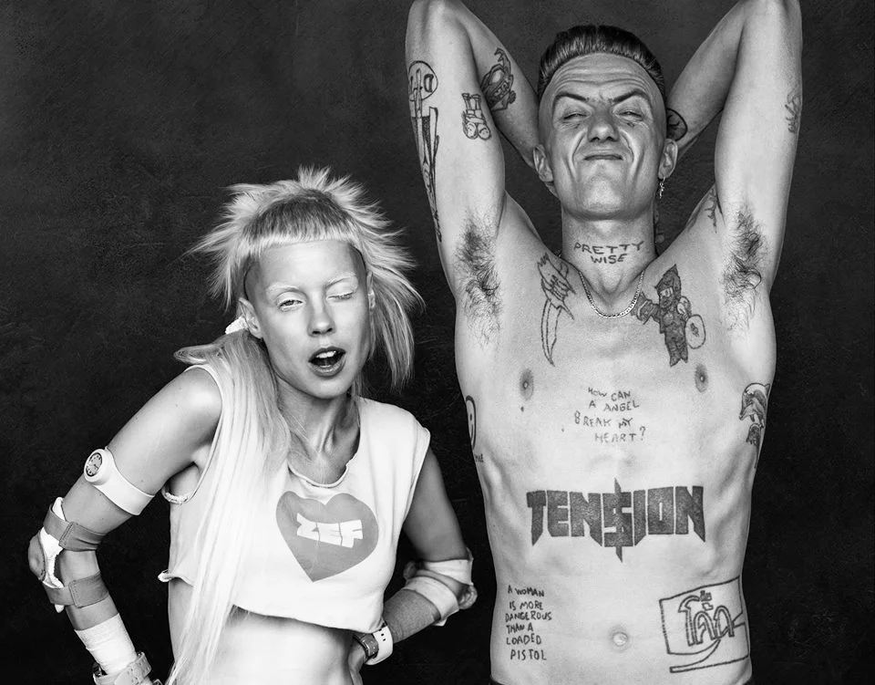

Banda de electro rap-rave formada en Ciudad del Cabo, Sudáfrica, en 2008 y la cual autodefine
su estilo como un movimiento
que mezcla diversas culturas, el cual se denomina Zef.2
Entre sus sencillos más exitosos y mis favoritos se encuentran «I Fink U Freeky» y «Ugly Boy»
